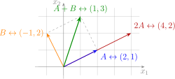

•WD3_06.08.12 (MD 06.08.01) De leerlingen voeren bewerkingen uit met matrices: optelling, scalaire vermenigvuldiging, matrixvermenigvuldiging, machtsverheffing en transpositie.
– afbakening: rekenregels en eigenschappen
•WD3_06.08.13 (MD 06.08.02) De leerlingen gebruiken matrixmodellen om evoluties te beschrijven.
– afbakening: migratiematrices, Lesliematrices, matrixvoorstelling van een graaf
– afbakening: evenwichtstoestand
Didactische uitwerking: het begrip matrix en de bijzondere matrices, gelijkheid van matrices, de getransponeerde matrix, de som van matrices en het product met een reëel getal met hun eigenschappen
(commutatieve groep, reële vectorruimte), het product van matrices, de macht van een vierkante matrix en de eigenschappen van dat product (niet-commutatieve ring met eenheidselement), en toepassingen met overgangs-,
migratie- en Lesliematrices.
I Inleiding
Zie handboek VBTL - Matrices, inleidend voorbeeld p 9.
Klik op een element: de rij en de kolom waarin het staat, lichten op. Met de knoppen verander je het aantal rijen en
kolommen, en dus de orde van de matrix.
noemen we een matrix met \(m\) rijen en \(n\) kolommen, kort een \(m\by n\)-matrix.
2 Bijzonder geval: \(2\by 2\)-matrix
Voor \(a,b,c,d\in \mathbb {R}\) noemen we
\[ \begin {pmatrix}a&b\\ c&d\end {pmatrix} \]
een matrix met \(2\) rijen en \(2\) kolommen, kort een \(2\by 2\)-matrix. De getallen \(a\), \(b\), \(c\) en \(d\) noemen we de elementen van de matrix.
3 Notatie
Rond de elementen schrijven we haken. Daarvoor bestaan er twee gebruiken: ronde haken en vierkante haken. Beide betekenen precies hetzelfde.
Ik gebruik graag ronde haken. Jij kiest voor jezelf.
Let op: verticale strepen betekenen iets anders. Die noteren geen matrix, maar een getal: de determinant van een vierkante matrix (zie het volgende hoofdstuk).
\[ \begin {pmatrix}1&-2\\3&5\end {pmatrix}\ \text {is een matrix,} \qquad \begin {vmatrix}1&-2\\3&5\end {vmatrix}\ \text {is een getal.} \]
4 Opmerkingen
• \(a_{ij}\) is het element dat in de \(i^\text {e}\) rij en de \(j^\text {e}\) kolom staat. De rij staat dus eerst.
• Verkorte notatie: \(A=(a_{ij})\). Een matrix noteren we met een hoofdletter.
• De verzameling van alle \(m\by n\)-matrices noteren we met \(\mathbb {R}^{m\times n}\).
• Het aantal rijen en kolommen samen noemen we de orde van de matrix, bijvoorbeeld orde \(m\by n\).
III Enkele bijzondere matrices
1 Nulmatrix
Definitie
Een matrix waarvan alle elementen gelijk zijn aan \(0\), noemen we een nulmatrix.
Notatie
We noteren een nulmatrix met \(O\), of met \(O_{m\times n}\) als we de orde \(m\by n\) willen benadrukken.
Kies een rijmatrix of kolommatrix. Met Wijzig krijg je andere elementen; de matrix houdt precies één rij of één
kolom.
3 Vierkante matrix
Definitie
Een matrix met evenveel rijen als kolommen noemen we een vierkante matrix. Een vierkante matrix van orde \(n\by n\) noemen we kort een vierkante matrix van orde \(n\).
Met Wijzig A krijg je een andere matrix. Kleiner en Groter veranderen de orde;
Hoofddiagonaal en Nevendiagonaal tonen of verbergen de overeenkomstige diagonaal.
De aangeduide elementen vormen de hoofddiagonaal.
4 Diagonaalmatrix
Definitie
Een vierkante matrix waarvan alle elementen buiten de hoofddiagonaal gelijk zijn aan \(0\), noemen we een diagonaalmatrix.
In symbolen
\[ A=(a_{ij})\in \mathbb {R}^{n\times n}\text { is diagonaal} \quad \Longleftrightarrow \quad a_{ij}=0\text { voor }i\ne j. \]
Verander de orde. De eenheidsmatrix heeft altijd enen op de hoofddiagonaal en nullen daarbuiten.
Notatie
We noteren een eenheidsmatrix met \(I\), of met \(I_n\) als we de orde willen benadrukken.
7 Driehoeksmatrix
Definitie
Een vierkante matrix waarvan alle elementen onder de hoofddiagonaal gelijk zijn aan \(0\), noemen we een bovendriehoeksmatrix. Zijn alle elementen boven de hoofddiagonaal gelijk aan \(0\), dan spreken we van een
onderdriehoeksmatrix.
In symbolen
\[ \begin {aligned} A=(a_{ij})\in \mathbb {R}^{n\times n}\text { is bovendriehoekig} &\quad \Longleftrightarrow \quad a_{ij}=0\text { voor }i>j,\\ A=(a_{ij})\in \mathbb {R}^{n\times
n}\text { is onderdriehoekig} &\quad \Longleftrightarrow \quad a_{ij}=0\text { voor }i<j. \end {aligned} \]
Schakel tussen boven- en onderdriehoekig. De nuldriehoek ligt telkens aan de andere kant van de
hoofddiagonaal.
8 Eigenschappen combineren
Een matrix kan tegelijk tot verschillende bijzondere soorten behoren. Of dat mogelijk is, hangt soms af van haar orde en soms van de gekozen eigenschappen.
Schakel een of meer bijzondere eigenschappen in. Met Kleiner en Groter pas je de orde aan wanneer de
gekozen eigenschappen dat toelaten. Als de eigenschappen verenigbaar zijn, verschijnt een voorbeeldmatrix.
IV Gelijke matrices
1 Definitie
Twee \(m\by n\)-matrices zijn gelijk als elke twee overeenkomstige elementen gelijk zijn.
De getransponeerde (of gespiegelde) matrix \(A^{\mathsf T}\) van een gegeven matrix \(A\) krijgen we door de opeenvolgende rijen van \(A\) te schrijven als opeenvolgende kolommen.
Selecteer een rij van \(A\): de volledige rij licht samen met de overeenkomstige kolom van \(A^{\mathsf T}\) op. Selecteren
vanuit \(A^{\mathsf T}\) werkt omgekeerd.
Een \(3\by 2\)-matrix wordt dus een \(2\by 3\)-matrix.
3 Symmetrische matrix
Een vierkante matrix \(A\) waarvoor \(A^{\mathsf T}=A\) geldt, noemen we een symmetrische matrix.
\[ A=\begin {pmatrix}2&1\\1&3\end {pmatrix} \]
Klik op een element van \(A\): ook het overeenkomstige element aan de andere kant van de hoofddiagonaal licht op. Omdat
beide gelijk zijn, geldt \(A^{\mathsf T}=A\).
4 Antisymmetrische matrix
Een vierkante matrix \(A\) waarvoor \(A^{\mathsf T}=-A\) geldt, noemen we een antisymmetrische matrix.
\[ A=\begin {pmatrix}0&2\\-2&0\end {pmatrix} \]
Klik op een element van \(A\): ook het overeenkomstige element aan de andere kant van de hoofddiagonaal licht op. Beide
zijn elkaars tegengestelde en op de hoofddiagonaal staat steeds \(0\), zodat \(A^{\mathsf T}=-A\).
2) \(\begin {pmatrix}2&3\\0&1\end {pmatrix} +\begin {pmatrix}1&5&-7&0\end {pmatrix}\) kan niet: verschillende orde!
Klik op een element van de som: de twee getallen die samen dat element vormen, lichten op. Met Verschillende
orde zie je waarom optellen dan niet lukt.
Versleep \(r\) en volg hoe elk element mee verandert. Kijk zeker eens naar \(r=1\), \(r=0\) en \(r=-1\): het neutraal
element, de nulmatrix en de tegengestelde matrix.
4 Eigenschappen
Voor alle \(r,s\in \mathbb {R}\) (getallen) en alle \(A,B\in \mathbb {R}^{m\times n}\) (matrices) geldt; dit is een uitwendige vermenigvuldiging.
1) \(r\cdot A\in \mathbb {R}^{m\times n}\)
getal \(\by \) matrix geeft een matrix van dezelfde orde.
Voor \(2\by 1\)-matrices kunnen we dat letterlijk tekenen. Matrixoptelling wordt de parallellogramregel en vermenigvuldigen met een getal rekt een vector uit, krimpt hem in of keert zijn zin om.

Versleep de punten \(A\) en \(B\): de parallellogramregel bepaalt telkens \(A+B\). Verander \(r\) met de schuifregelaar en
merk dat \(rA\) op dezelfde rechte als \(A\) blijft liggen.
Verander met de knoppen de orde van \(A\) en van \(B\). Enkel als de binnenste afmetingen gelijk zijn, bestaat
\(A\cdot B\); de buitenste afmetingen geven dan de orde van het product.
3 Algemeen
Het product van een \(m\by n\)-matrix \(A\) met een \(n\by p\)-matrix \(B\) is de \(m\by p\)-matrix \(C\), waarbij het element \(c_{ij}\) verkregen wordt door de som te nemen van de producten van de elementen
van de \(i^\text {e}\) rij van \(A\) met de overeenkomstige elementen van de \(j^\text {e}\) kolom van \(B\):
Klik op een element van het product: de rij van \(A\) en de kolom van \(B\) die het opleveren, lichten op, en eronder staat de
som van producten uitgeschreven. Ook met letters in plaats van getallen, en in de omgekeerde volgorde.
Vergelijk de drie producten: \(A\cdot B\) bestaat, \(A^{\mathsf T}\cdot B^{\mathsf T}\) niet, en \(B^{\mathsf
T}\cdot A^{\mathsf T}\) geeft de getransponeerde van \(A\cdot B\). De volgorde keert dus om.
Verhoog \(p\) en volg wat er met de elementen gebeurt. Bij de eerste matrix verschijnen de getallen van Fibonacci, bij de
laatste naderen de machten een evenwicht.
Enkel bij een vierkante matrix is dit zinvol.
6 Eigenschappen van het product van vierkante matrices
\(A\cdot B\) staat boven, \(B\cdot A\) eronder: de plaatsen waar de twee verschillen, lichten op. Kies ook eens \(B=I\) of
\(B=2A\); dan valt het verschil weg, maar dat is geen regel.
\[ \boxed {\;\text {Let op: } A\cdot B\neq B\cdot A \text { voor niet alle } A,B\in \mathbb {R}^{n\times n}.\;} \]
6)Distributief: ja, maar de volgorde bewaren!
\(\seteqnumber{0}{}{0}\)
\begin{align*}
A\cdot (B+C)&=A\cdot B+A\cdot C\\ (B+C)\cdot A&=B\cdot A+C\cdot A
\end{align*}